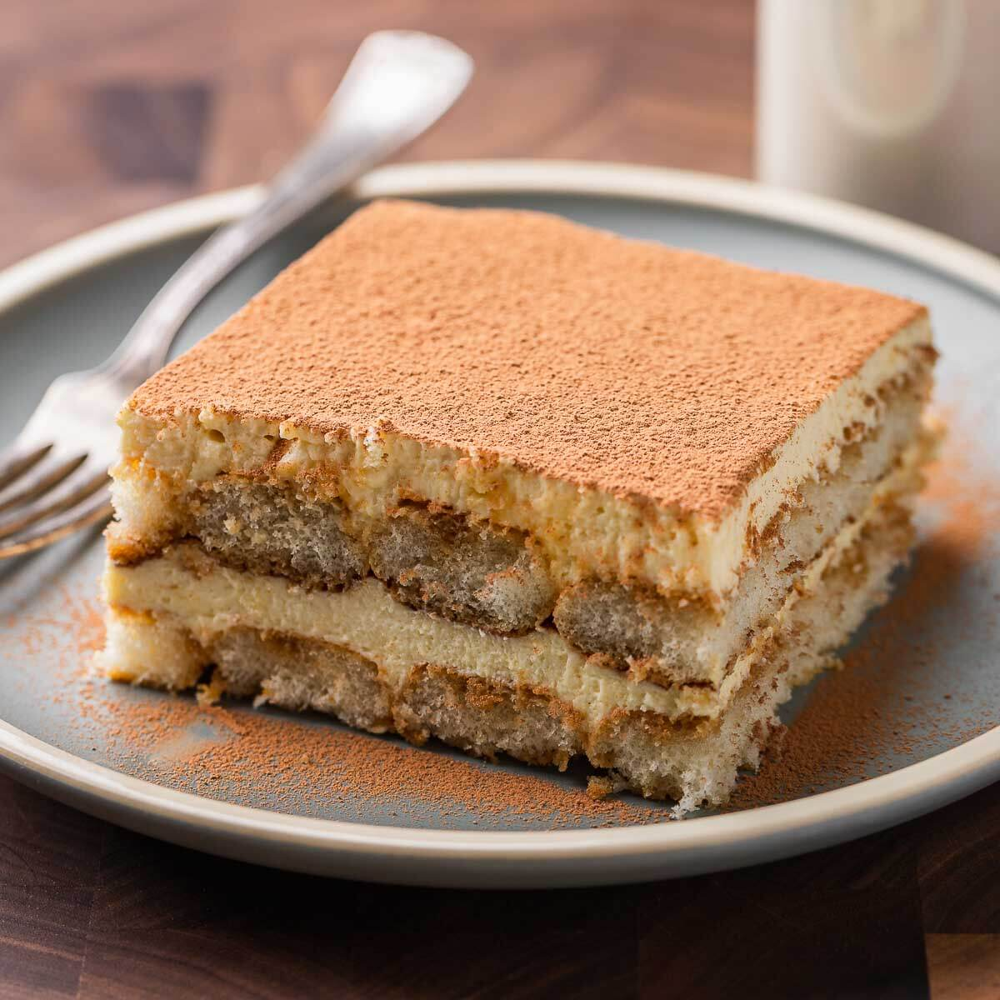

Tiramisu Recipe

Ingredients:
- 6 egg yolks
- 1 cup granulated sugar
- 1 1/4 cups mascarpone cheese
- 1 3/4 cups heavy cream
- 1 cup strong brewed coffee, cooled
- 1/4 cup coffee liqueur (optional)
- 24-30 ladyfinger cookies
- Cocoa powder for dusting
- Chocolate shavings for garnish (optional)
Steps:
-
Prepare Coffee Mixture:
-
Brew a cup of strong coffee and let it cool. Stir in the
coffee liqueur if using.
-
Make Mascarpone Cream:
-
In a large bowl, whisk together egg yolks and sugar
until thick and pale.
- Add mascarpone cheese and mix until smooth.
-
In a separate bowl, whip the heavy cream until stiff
peaks form. Fold it into the mascarpone mixture.
-
Assemble Tiramisu:
-
Dip ladyfinger cookies into the coffee mixture and
arrange a layer in the bottom of a serving dish.
-
Spoon half of the mascarpone cream over the cookies and
smooth it with a spatula.
-
Repeat with another layer of dipped cookies and the
remaining mascarpone cream.
-
Chill and Garnish:
-
Chill the Tiramisu in the refrigerator for at least 4
hours or overnight.
-
Before serving, dust the top with cocoa powder and
garnish with chocolate shavings if desired.
-
Serve:
- Slice and serve the delicious Tiramisu. Enjoy!
Tiramisu is a classic Italian dessert with layers of coffee-soaked
ladyfingers and creamy mascarpone. It's the perfect indulgence!